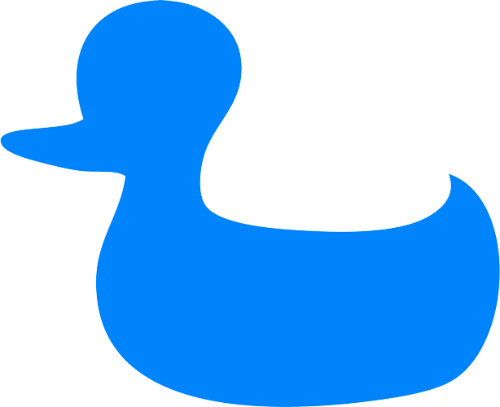

<!--
  Generated template for the IntroPage page.

  See http://ionicframework.com/docs/components/#navigation for more info on
  Ionic pages and navigation.
-->
<ion-header>
  <ion-navbar>
    <ion-title>
      
    </ion-title>
  </ion-navbar>
</ion-header>

<ion-content padding>
  <ion-grid>
    <!---->
    <p></p>
    <div>
      <h2><b>Découvrez ce qui se passe dans le monde en temps réel</b></h2>
      <button ion-button round color="primary" (click)="gotoSignUp()">Démarrer</button>
    </div>
    <p class="">Vous avez déjà un compte ? <a href="javascript:void(0)" (click)="gotoSignIn()">Connectez-vous</a></p>

  </ion-grid>
</ion-content>
